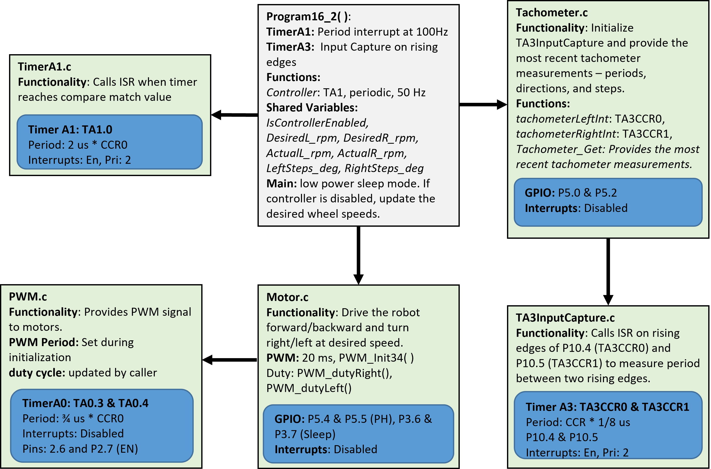

🔬 Lab 16 Tachometer
Contents
🔬 Lab 16 Tachometer#
📌 Objectives#
Students should be able to configure Timer_A module for input capture measurements.
Students should be able to develop low-level software drivers to measure distance and speed of the two motors on the robot.
Note
Simplicity is the soul of efficiency. – Austin Freeman
📜 Synopsis#
In this lab, we will develop a software module that measures the speeds of motors and the displacement of the robot. The key element for measuring the speed and displacement of our robot is a Hall-effect sensor, a semiconductor device that produces a voltage proportional to the magnetic field. As shown in the figure below, a Hall-effect sensor can measure the magnetic field intensity of two magnets attached to a rotating plate.

The first goal of this lab is to write Timer_A software that can measure periods from the two encoders. The counter of Timer_A is 16-bit wide, so the period measurement will have a precision of 16 bits. This means you can measure about 65536 different periods. The resolution is the smallest change in the period the measurement can distinguish. The resolution in input capture mode is equal to the period of the selected clock. If you choose the SMCLK at 12 MHz, a prescale of 1, and an input divider of 1/8, the period measurement resolution will be 2/3 us. The maximum period that can be measured is the precision in alternatives times the resolution. At this clock and prescale, the maximum period that can be measured is about 43 ms.
The second goal is to use the period to determine wheel speed. Since there are 360 pulses per rotation, this 43 ms maximum means the slowest wheel speed that can be measured will be about 3.81 rpm. If \(n\) is the period in 2/3 us units, then the angular speed of the wheel, \(\omega\), in rpm can be calculated as
The third goal is to use the second input of the encoder to determine which direction the motor is spinning. You will write software that counts the number of pulses observed on each wheel as the robot moves. You will add to a counter as the robot moves forward and subtract from a counter as the robot moves backward. Then, the counter will be used to calculate the distance the wheel travels.
💻 Procedure#
Setup#
Go to ECE382 Teams > General > Files > Class Materials > SourceFiles.
Download
Lab16_Tachmain.cfrom the Teams folder into your/workspace/Lab16_Tachfolder using Windows File Explorer (not Code Composer Studio). Caution: It must be in theLab16_Tachfolder not in theincfolder.Download
Tachometer.c,Tachometer.h, andTA3InputCapture.cinto your workspace/inc folder using Windows File Explorer (not Code Composer Studio). Caution: It must be in theincfolder not in theLab16_Tachfolder.Right-click on your
Lab16_Tachproject in CCS and select “Add Files…”. Browse to yourincfolder and selectUART0.c. Click Open. Ensure “Link to file” is selected and create a link to the “PROJECT_LOC”.
Complete functions in TA3InputCapture.c.#
This is part of Homework 16
Complete
TimerA3Capture_Init,TA3_0_IRQHandler(), andTA3_N_IRQHandler()inTA3InputCapture.c.Follow the instructions inside
TA3InputCapture.cto complete it.Copy and paste the code in Gradescope to submit your Homework 16.
Before starting this lab, check the solutions posted in Gradescope to ensure you have the correct code. If the solution is not published in Gradescope, go through your code with your instructor.
Demo Program16_1()#
Important
You should understand the main code provided in every module. No such code will be provided for your final project, and you must write your main.c from scratch.
Complete LCDSpeed() in
Lab16_Tachmain.c. The LCD should display the left and right tachometer periods and the speeds of both wheels in RPM as shown below.
{kind=link}
Demo
Program16_1()running at the speeds from 25%, 50%, 75%, 100%, and back to 25% as shown below.
Graph duty cycle versus actual speed.#
Program16_1()stores the speed of each motor and the assigned duty cycles in the following buffers.
uint16_t PeriodBufferR[BUFFER_SIZE]; // to store right period
uint16_t PeriodBufferL[BUFFER_SIZE]; // to store left period
uint16_t SpeedBufferR[BUFFER_SIZE]; // to store right speed
uint16_t SpeedBufferL[BUFFER_SIZE]; // to store left speed
uint16_t DutyBuffer[BUFFER_SIZE]; // to store duty cycles
At the end of
Program16_1, the LCD will display whether you want to transmit the data in the buffers, as shown below.
{kind=link}
Press the left switch to select Y (yes), but do not press a bump switch yet.
Connect the USB cable to the robot and open the serial terminal as we did in Lab 11.
Press a bump switch to start transmitting data to the serial terminal. The data will be transmitted as shown below.
{kind=link}
Once the data transmission is complete, the LCD will display
TX is Done.Select the entire data in the serial terminal except the header,
***Receiving buffer data***.Copy the data into a text file and save it as a text file (.txt extension) or a comma-separated value file (.csv extension).
Use a software tool of your choice to plot the duty cycle, the timer periods, and the actual speeds in rpm using the values from the
PeriodBuffer,SpeedBufferandDutyBufferarrays. Recommended software tools include, but are not limited to, MATLAB, Excel, Python with matplotlib, and Jupyter notebook. You can also use this Jupyter notebook in Colab
The first column of the data is time in 10 milliseconds - 1 means 10ms and 2 means 20ms.
The axes must have labels and units, e.g.,
time (sec). You must use the standard units, such as sec, ms, and us - 10ms is not a standard unit. So, you must convert the time data into seconds - You know how to convert the data in 10 ms into the values in sec.The duty cycle must be in percentage, not permyriad.
The speed must be in rpm, rad/sec, or deg/sec.
Caution
The figures must have correct labels and units. You will only receive the full credit if labels and units are present or correct.
Important
Data-based analyses are critical in engineering and science. Videos and pictures are suitable for showcases but not essential elements in engineering experiments. You need to take measurements for your experiments and show your analyses based on the measurements. Taking measurements, generating meaningful plots, and comprehensive analyses will be a significant part of your final presentations and reports.
The component block diagram of this part is shown below.
{kind=link}
Submit the following plots in Gradescope.
Periods vs. time
Speeds vs. time
Duty cycle vs. time
Complete functions for Program16_2.#
Read
Tachometer.candTachometer.hthoroughly.Read the following functions thoroughly. You need to understand how the semaphore,
IsControllerEnabled, is used in multiple functions.average()You will average a specific number of the latest tachometer readings stored in an array.
The
average()function will be used to calculate the average over an array.This function is already implemented for you.
Complete the
UpdateParameters()function inProgram16_2.Use the two switches to increment the desired speed of each wheel by 10 rpm (sw1 - right and sw2 - left) and roll over if the maximum value is reached.
Use the comments to complete the code inside the
whileloop.
Complete the
Controller()function inProgram16_2.Create a basic controller that will increase/decrease the speed of the wheels accordingly to get close to the desired speed.
Use the comments to complete the code.
Demo
Program16_2()that you can increase the desired speed of the wheels with the switches and display the actual and desired speeds and the distance traveled on the LCD. Show that both wheels are running at 50 rpm followed by 100 rpm. Slightly hold a wheel to add friction to the wheel and show that the speed controller maintains the desired speed. You also need to show that the desired speeds roll over if you reach the maximum value.
The component block diagram of this part is shown below.
{kind=link}
Make your robot drive in a square.#
Complete
Program16_3to drive the robot in the maze.You may need to adjust your drive-straight wheel speed values if one wheel is going faster/slower than the other.
The robot must start anywhere behind the start line shown in the figure below.
You are not allowed to intentionally bump into the walls to decide when to turn (cannot do the bump-n-turn algorithm).
You have to base your decision to turn on the distance traveled only.
Your robot must stop before hitting the wall at the goal.
Demo
Program16_3driving the robot in a maze.

🚚 Deliverables#
Deliverable 1#
[10 Points] Demo
Program16_1()running increasing speed from 25%, 50%, 75%, 100%, and back to 25% Comment your code and push it to your repository.
Deliverable 2#
[10 points] Submit your three plots in Gradescope.
Deliverable 3#
[15 Points] Demo
Program16_2()with operational switches and LCD. The actual wheel speeds must reach the desired wheel speeds. Comment your code and push it to your repository.
Deliverable 4#
[15 Points] Demo
Program16_3()driving the robot in the maze. Comment your code and push it to your repository.
This lab has been adapted from the TI RSLK: The Solderless Maze Edition curriculum